Navigation
Teilnahme an Dan-Prüfungen:

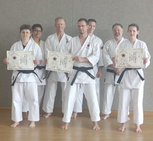
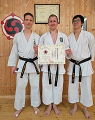
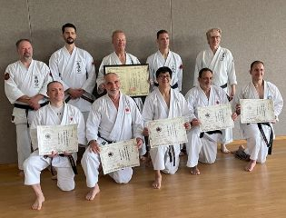
2024 Würzburg 2023 Bad Kissingen
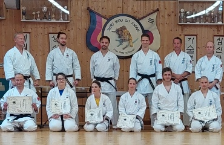
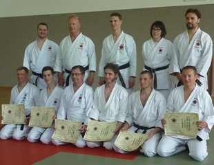
2022 Würzburg 2019 Bad Kissingen
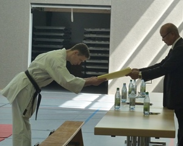
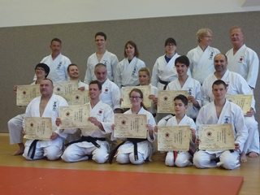
2018 Ernennung zum 6. Dan 2018 Bad Kissingen
Erfolgreiche Dan-Prüfungen in den Jahren 2016, 2015, 2014 und 2011.
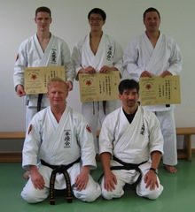
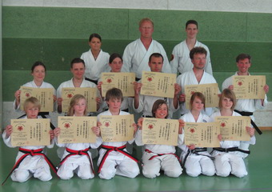
2010 Bad Kissingen 2009 Bad Kissingen
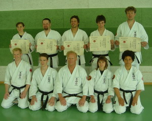
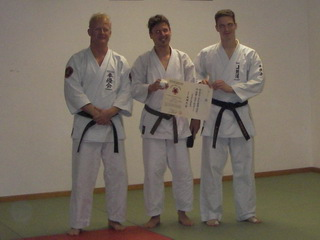
2007 Bad Kissingen 2005 Regensburg